1. The Turn
The queue line comes down towards the bar and bends to run along it. Still a queue, just sideways.
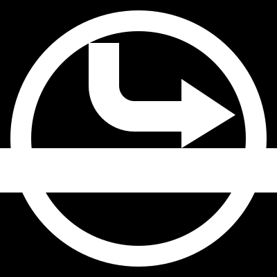
Queue Along The Bar
The queue line comes down towards the bar and bends to run along it. Still a queue, just sideways.

The single file itself turns the corner: a column of heads bends into a row along the bar, last one with an arrow.
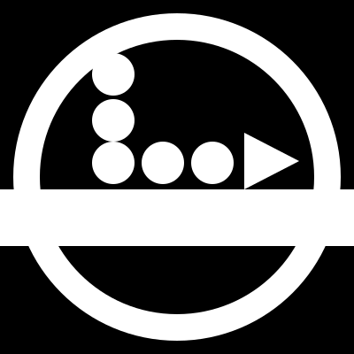
The current roundel with the arrival order on their backs, out of position on purpose: 2, 1, 3. The barperson knows.
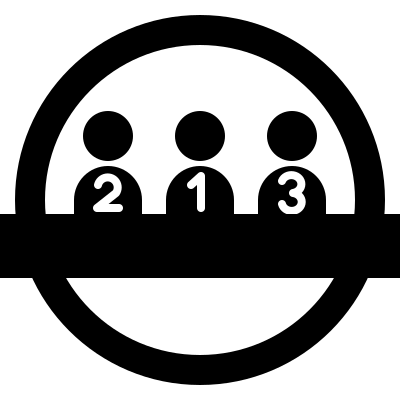
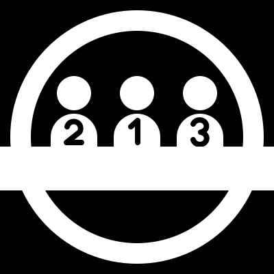
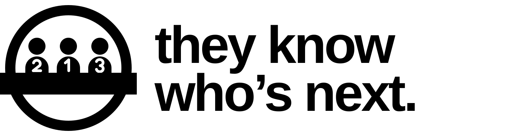
The barperson behind the bar, the queue held in a thought bubble. The order is in their head.
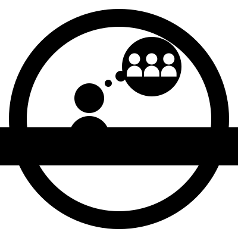
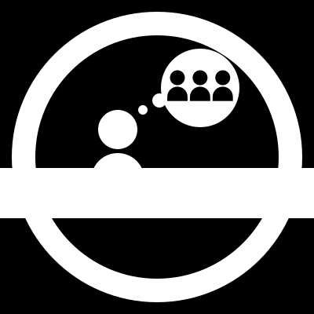
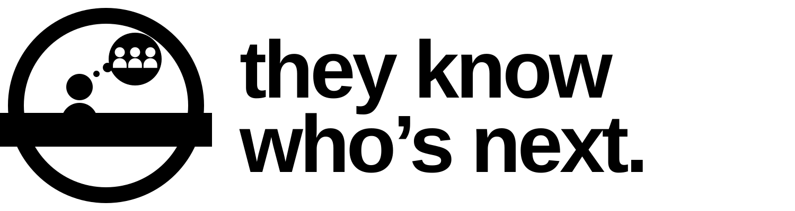
The site’s dot diagram as a mark. The single file struck out, the spread along the bar ticked.
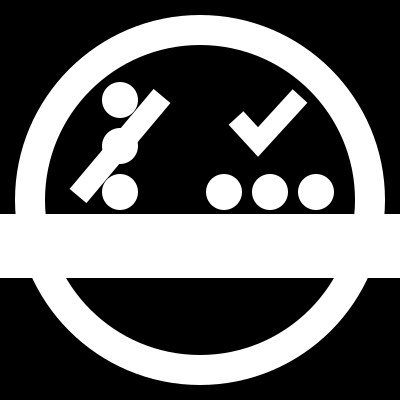
A rope-barrier post, the single file’s own furniture, at the bar and struck through.
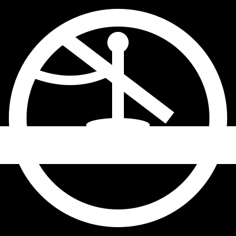
The bent arrow lands among the people already spread along the bar: the queue turns and joins the row.
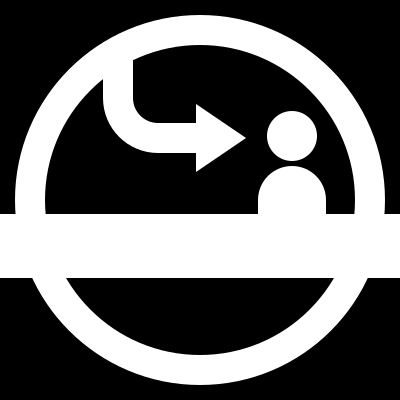